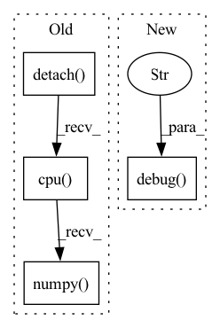

Pattern ID :7375

Before Change
// self.L = self.L_history[-6:][np.argmax(np.abs(self.rho_history[-6:]))] * np.exp(np.random.normal(loc = 0, scale = 1))
h = self.update_h_v3()
if self.verbose > 2:
print("h: ", h.detach().cpu().numpy())
with torch.no_grad():
self.current_Y = self.model.full_sample(self.current_state + h, as_representation = True, override_locked = False, flatten = True)
if self.model.target.has_mask:
After Change
elif self.iteration > 0:
rho = self.rho_3(np.nanmin(self.loss_history[:-1]), loss, h)
if self.verbose > 1:
AP_config.ap_logger.debug(f"LM loss: {loss.item()}, best loss: {np.nanmin(self.loss_history[:-1])}, loss diff: {np.nanmin(self.loss_history[:-1]) - loss.item()}, L: {self.L}")
elif self.verbose > 0 and rho > self.epsilon4:
AP_config.ap_logger.info(f"LM loss: {loss.item()}")
self.rho_history.append(rho)
if self.verbose > 1:
In pattern: SUPERPATTERN
Frequency: 3
Non-data size: 4
Instances
Fragment ID: 24487677
Project Name: connorstoneastro/autoprof
Commit Name: 6a9ca466b2a9f7dd23a7661bddbe588d3676cd17
Time: 2023-02-02
Author: connorstone628@gmail.com
File Name: build/lib/autoprof/fit/lm.py
M Class Name: LM
N Class Name: LM
M Method Name: step_method0(2)
N Method Name: step_method0(2)
M Parent Class: BaseOptimizer
N Parent Class: BaseOptimizer
M File Name: build/lib/autoprof/fit/lm.py
N File Name: build/lib/autoprof/fit/lm.py
M Start Line: 167
M End Line: 200
N Start Line: 161
N End Line: 239
'>
Before Change
// self.L = self.L_history[-6:][np.argmax(np.abs(self.rho_history[-6:]))] * np.exp(np.random.normal(loc = 0, scale = 1))
h = self.update_h_v2()
if self.verbose > 2:
print("h: ", h.detach().cpu().numpy())
with torch.no_grad():
self.current_Y = self.model.full_sample(self.current_state + h, as_representation = True, override_locked = False, flatten = True)
After Change
AP_config.ap_logger.debug("full jac")
self.update_J_AD()
else:
AP_config.ap_logger.debug("Broyden jac")
self.update_J_Broyden(h, self.prev_Y[0], self.current_Y)
self.update_hess()
self.update_grad(self.prev_Y[1])
'>
Fragment ID: 24487676
Project Name: connorstoneastro/autoprof
Commit Name: 10b2a7770d988d066380285137108a388ebd1bad
Time: 2023-01-14
Author: connorstone628@gmail.com
File Name: autoprof/fit/lm.py
M Class Name: LM
N Class Name: LM
M Method Name: step_method1(2)
N Method Name: step_method1(2)
M Parent Class: BaseOptimizer
N Parent Class: BaseOptimizer
M File Name: autoprof/fit/lm.py
N File Name: autoprof/fit/lm.py
M Start Line: 250
M End Line: 328
N Start Line: 251
N End Line: 317
'>
Before Change
// self.L = self.L_history[-6:][np.argmax(np.abs(self.rho_history[-6:]))] * np.exp(np.random.normal(loc = 0, scale = 1))
h = self.update_h_v3()
if self.verbose > 2:
print("h: ", h.detach().cpu().numpy())
with torch.no_grad():
self.current_Y = self.model.full_sample(self.current_state + h, as_representation = True, override_locked = False, flatten = True)
if self.model.target.has_mask:
After Change
elif self.iteration > 0:
rho = self.rho_3(np.nanmin(self.loss_history[:-1]), loss, h)
if self.verbose > 1:
AP_config.ap_logger.debug(f"LM loss: {loss.item()}, best loss: {np.nanmin(self.loss_history[:-1])}, loss diff: {np.nanmin(self.loss_history[:-1]) - loss.item()}, L: {self.L}")
elif self.verbose > 0 and rho > self.epsilon4:
AP_config.ap_logger.info(f"LM loss: {loss.item()}")
self.rho_history.append(rho)
if self.verbose > 1:
'>
Fragment ID: 24487673
Project Name: connorstoneastro/autoprof
Commit Name: 10b2a7770d988d066380285137108a388ebd1bad
Time: 2023-01-14
Author: connorstone628@gmail.com
File Name: autoprof/fit/lm.py
M Class Name: LM
N Class Name: LM
M Method Name: step_method0(2)
N Method Name: step_method0(2)
M Parent Class: BaseOptimizer
N Parent Class: BaseOptimizer
M File Name: autoprof/fit/lm.py
N File Name: autoprof/fit/lm.py
M Start Line: 167
M End Line: 232
N Start Line: 161
N End Line: 239